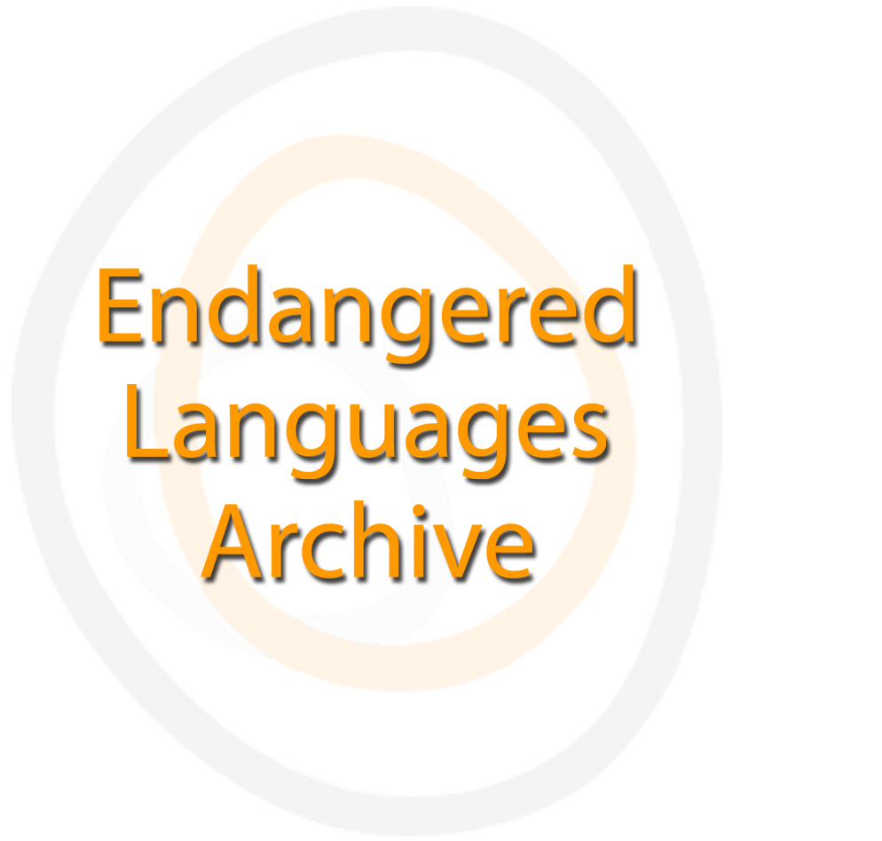

ELAR
Falar, cantar, rezar: diversidade e usos linguísticos especiais entre os Medzeniakonai
Apresentação em português da coleção Baniwa e Koripako, com instruções de cadastro, login e acesso às sessões.
Ver apresentação e instruções →Submódulo 02
Coleções linguísticas e culturais Baniwa, Koripako e Curripaco mantidas por arquivos digitais especializados. Os links externos abrem em uma nova aba.

Apresentação em português da coleção Baniwa e Koripako, com instruções de cadastro, login e acesso às sessões.
Ver apresentação e instruções →Coleção multimídia sobre narrativas, xamanismo, cerimônias, história, conhecimentos tradicionais e vida social Baniwa.
Abrir acervo ↗Registros linguísticos, musicais e rituais Curripaco reunidos por Jonathan Hill e preservados no AILLA.
Abrir acervo ↗